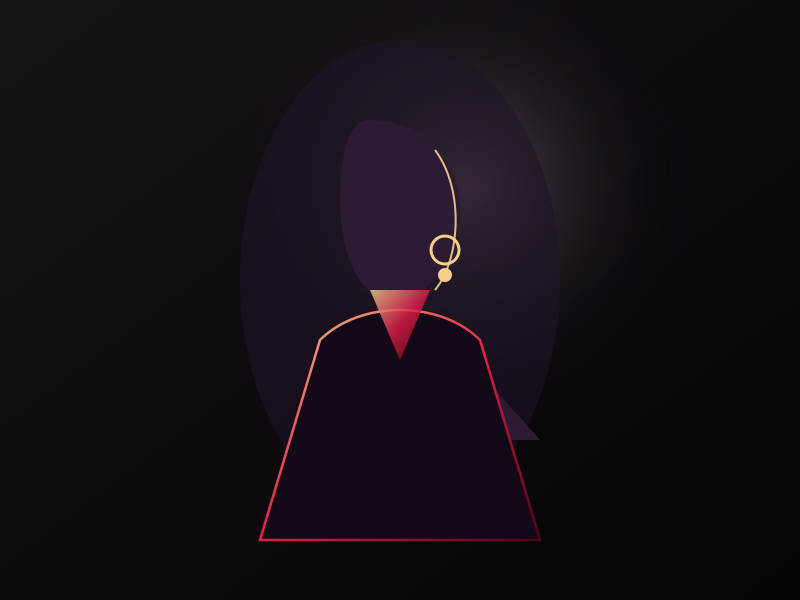
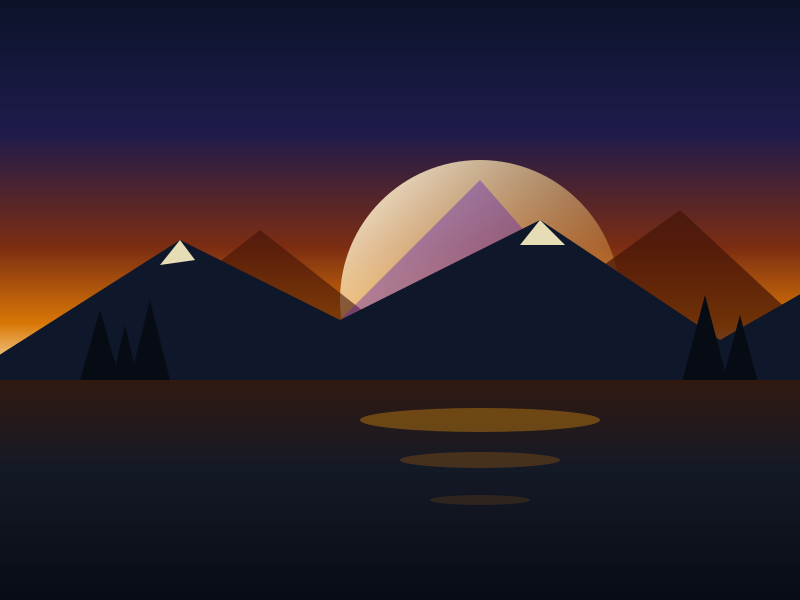
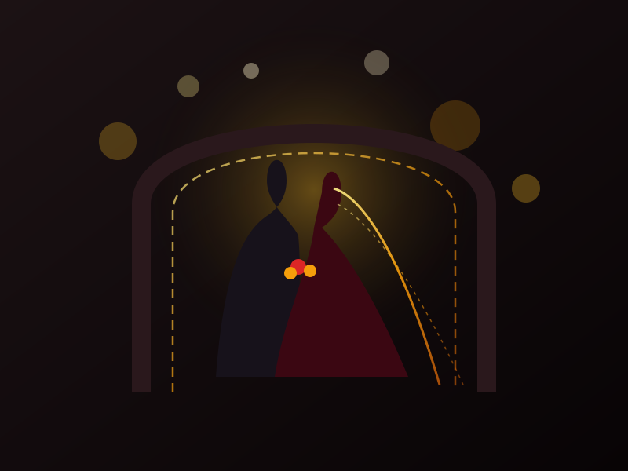
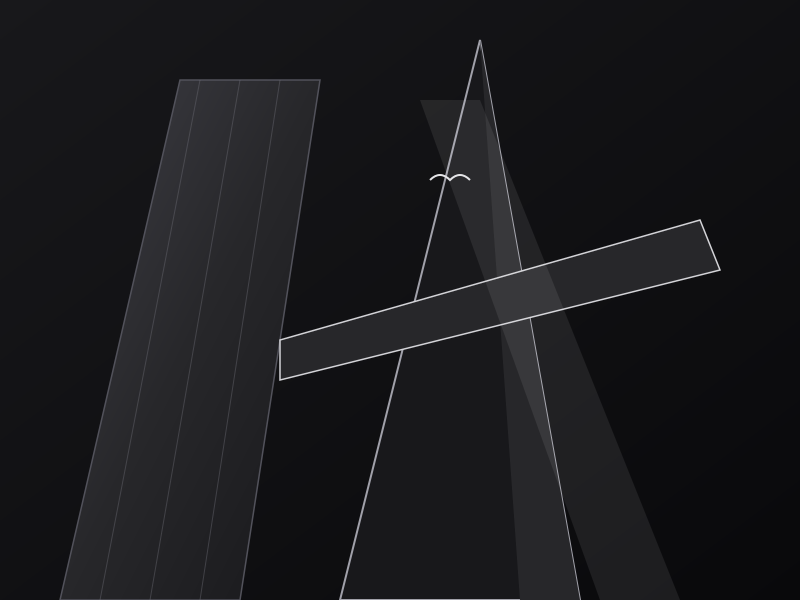
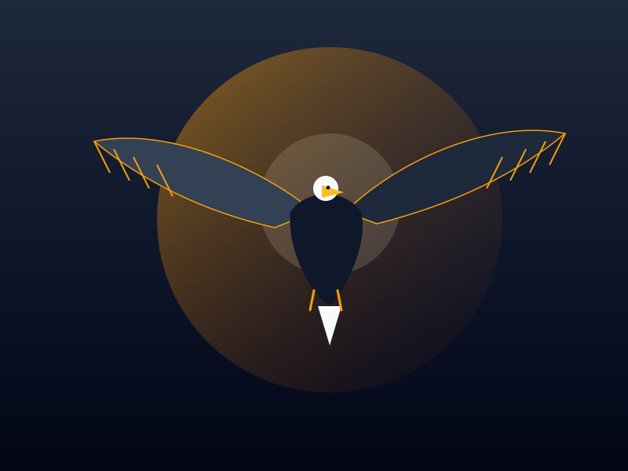
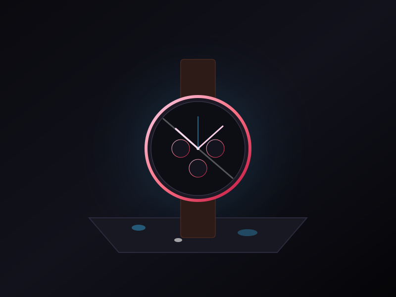

Editorial • Vogue
Fashion Series
The Noir Chiaroscuro Series
Dramatic chiaroscuro studio lighting and haute couture silhouettes captured during Milan Fashion Week.
I specialize in cinematic weddings, haute couture editorial fashion, and fine-art landscapes. Every photograph is composed to preserve genuine emotion, dramatic atmosphere, and raw human beauty.

Dedicated to the timeless interplay of natural light, shadow, and candid human connection.
Hi, I'm Kabir Varma, an international portrait, wedding, and commercial photographer with over 8 years of dedicated experience. My passion began with black & white 35mm film cameras, teaching me the irreplaceable value of patience, deliberate composition, and seeing beauty in unscripted moments.
Over the years, my work has been featured in international publications including Vogue India, Harper's Bazaar Bride, and National Geographic Traveler. Whether shooting an intimate palace wedding in Udaipur or an avant-garde editorial campaign in Milan, my philosophy remains the same: create imagery that moves the heart.
A showcase across editorial fashion, cinematic landscapes, royal weddings, and commercial still life.

Editorial • VogueDramatic chiaroscuro studio lighting and haute couture silhouettes captured during Milan Fashion Week.

Landscape • NatureFirst light breaking over jagged glaciated peaks reflected onto pristine alpine lake waters.

Wedding • RomanceIntimate romantic portraiture framed by heritage palace archways and golden hour fairy lights.

Architecture • B&WHigh-contrast geometric abstractions exploring light angles, cantilevered steel, and urban solitude.

Wildlife • ActionHigh-speed telephoto capture preserving razor-sharp feather texture and amber sunrise backlight.

Commercial • LuxuryPrecision macro commercial lighting highlighting rose-gold bezel caustics and high-speed water drops.
A chronological record of creative campaigns, gallery showcases, and client partnerships.
Directing bespoke high-end wedding documentations, luxury hospitality shoots, and commercial brand campaigns across Europe and South Asia.
Shot 18 high-profile cover stories, celebrity portraits, and seasonal designer runway retrospectives with an emphasis on dramatic mood and texture.
Curated 32 large-format fine art prints celebrating the timeless interplay of natural Himalayan light and ancient monastic architecture.
Trained under master commercial photographers in strobe lighting ratios, color science calibration, and large-format digital camera systems.
Tailored creative packages designed to deliver unforgettable visuals with museum-grade color grading.
Complete cinematic documentation of destination weddings, pre-wedding couple films, and heirloom album design.
Lookbooks, high-fashion campaigns, and magazine cover shoots engineered with dramatic studio lighting and creative direction.
Expressive portraits for artists, executives, actors, and personal branding that capture genuine presence and character.
Precision product photography, luxury real estate, and hospitality spaces shot with tilt-shift sharpness and balanced ambient light.
Have an upcoming wedding, editorial project, or commercial shoot? Contact me directly via phone or email.
Available for Worldwide Destination Travel • Instagram: @lumina.lens
Instagram Profile →